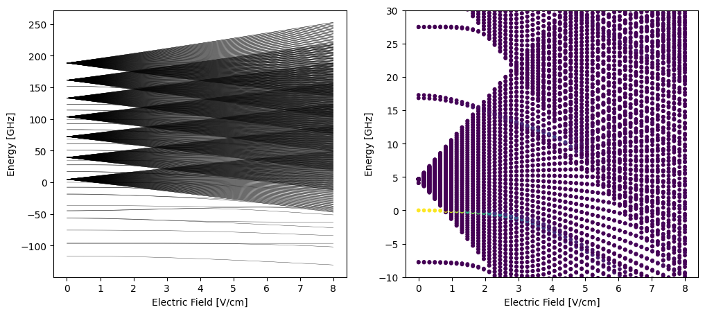
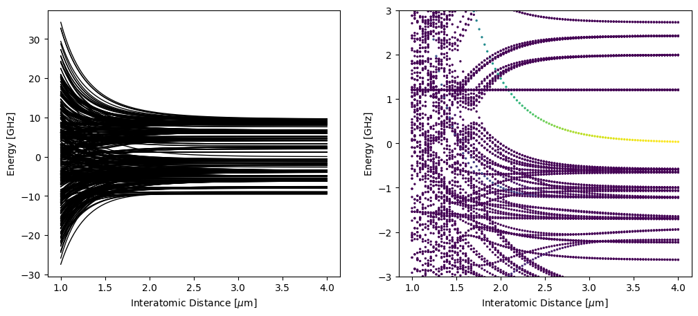
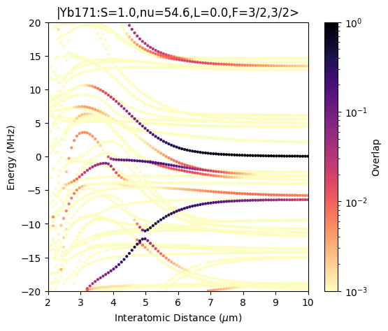
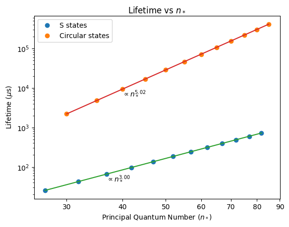
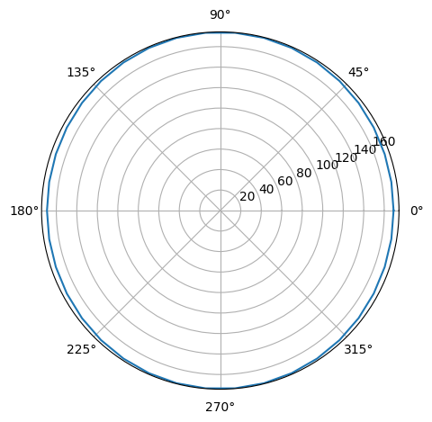
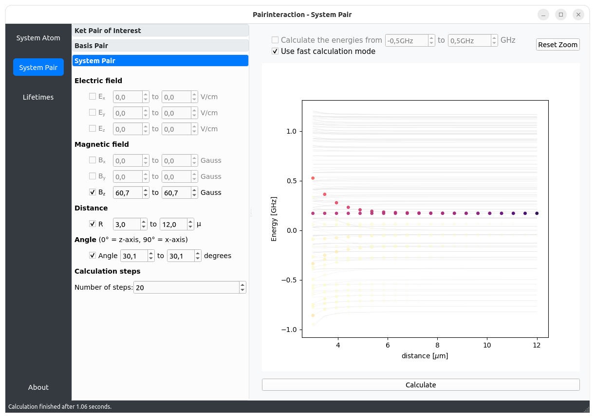

Tutorials
The pairinteraction software comes with a graphical user interface (GUI) and a Python API. The GUI provides a quick way to calculate Rydberg interaction potentials and energy shifts in the presence of external fields. The Python API is designed to automatize calculations and to have more fine-grained control.
Tutorials - Python API
Introduction
Here we show the usage of the API. The first tutorial serves as a quick start guide.






Applications
The following jupyter notebooks show how the pairinteraction Python API can be applied to solve complex problems and reproduce results from literature.
Tutorials - Graphical User Interface
After following the installation instructions, the graphical user interface (GUI) of pairinteraction can be started by executing
pairinteraction gui
from the command line. Here as quick preview of the GUI:
